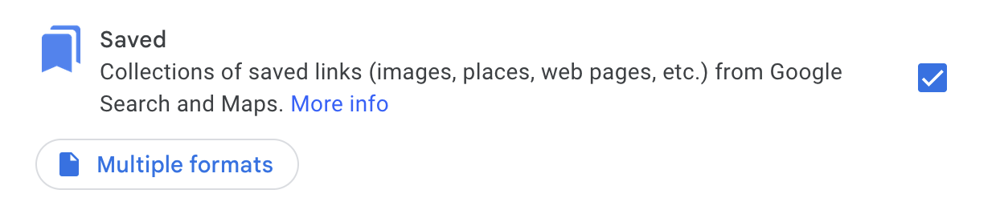

Exporting Google Maps Saved Places to Magic Earth
I had Claude Code write this blog post after about an hour of working with it to get a saved-pin import working from Google Maps to Magic Earth, because I can't honestly test Magic Earth without my saved pins! Google has too much of a historical advantage there, so I wanted to get those pins popping up.
I did finally get it to work, but it was a pain - hence this post! I wanted to get my solution online in case it's helpful to anyone.
You can probably get pretty far just opening Claude Code in the Google Takeout directory and asking questions like I did, but maybe this post will shortcut the process for some people (or AIs).
Goal
Export saved pin lists (Starred places, Want to go, Travel plans) from Google Maps and import them into Magic Earth, a privacy-focused navigation app.
Getting Your Data Out of Google
Use Google Takeout. All your saved pins live in Saved - not Maps or Maps (your places). Your Takeout folder should have a Saved subfolder, that's what you want.

Which Files Are Your Lists
The Saved/ folder contains one CSV per list. The naming is not obvious:
| Google Maps List | Export Filename |
|---|---|
| Starred places | Favorite places.csv |
| Want to go | Want to go.csv |
| Travel plans | Default list.csv |
Custom lists (Japan, Italy, etc.) export under their original names.
The Maps (your places)/Saved Places.json file looks promising — it's GeoJSON — but every coordinate is 0,0 with a comment saying "No location information is available for this saved place." It's useless for this purpose.
The Coordinate Problem
The CSVs contain place names and Google Maps URLs, but no coordinates. The URLs contain Google Place IDs (the !1s0x... part of the URL). These can be resolved to real lat/lng coordinates using the Google Places API.
You need a Google Cloud API key with the Places API enabled. You're looking for a private key — browser-restricted ("public") keys will be rejected for server-side calls.
The API endpoint that works:
https://maps.googleapis.com/maps/api/place/details/json?ftid=PLACE_ID&fields=geometry,name&key=YOUR_KEYSome URLs contain coordinates directly (e.g., maps/search/37.123,-122.456 for dropped pins). Check for those first to avoid unnecessary API calls.
If you don't have an API key, Claude had other suggestions — free geocoders like Nominatim (OpenStreetMap), scraping coordinates from the Google Maps URL redirects, etc. I had an API key handy from other projects so I went with that and it worked first try.
Magic Earth Import Format
Magic Earth accepts KML files. It does not support GPX. KMZ (zipped KML) did not register as openable on iOS in my testing.
Character Encoding Issues
Magic Earth's KML parser silently fails on certain characters. The import stops partway through with no error message. Characters that caused failures:
- Accented characters (e.g., Peña, Maipú)
- Apostrophes and single quotes
- Emojis
- HTML/XML entities like
'
The fix: strip all non-ASCII characters from <name> and <description> fields. Normalize unicode first (NFKD decomposition) to preserve base letters, then drop everything above ASCII 127. Remove apostrophes and quotes entirely.
The 30-Pin Import Cap
This was the hardest thing to diagnose. Magic Earth has an undocumented limit on how many placemarks it will import from a single KML file. In my testing, a 117-pin file resulted in only ~40 pins imported. No error, no warning — pins are silently dropped.
The fix: split KML files into chunks of 30 pins each. All pins import successfully at that size.
This means a list of 385 pins becomes 13 separate KML files that each need to be imported individually.
This is a pretty huge trade off, because each KML file becomes its own POI list in Magic Earth, so now I have ~25 lists representing what was 3 lists on Google. The good news is that you don't really need to interact with the lists at all - the pins just show up on the map and you can click them - that's all I needed.
Doing This Yourself
If you have Claude Code, the fastest path is:
cd ~/Downloads/Takeout
claudeThen describe what you want — something like "convert my Google Maps saved places CSVs to KML files for Magic Earth." It will identify the right files, resolve coordinates through the API, handle the encoding cleanup, and split into importable chunks. You'll need to provide your Google Places API key.
Importing
Transfer the KML files to your phone. On iOS: AirDrop or email, tap the file, select "Open in Magic Earth." Each chunk must be imported separately.